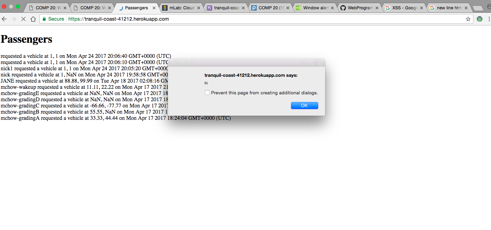
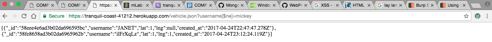
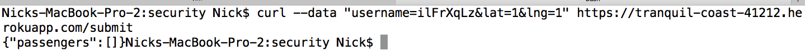

NotUber is a web application that provides a car service. Passengers and drivers area able to view each other on a map, with locations of passengers and cars shown depending on whether the user is a passenger or a driver.
I have been hired to find security vulnerabilities in this web application so that passengers' and drivers' sensitive information are not able to be stolen and so that the web applicatio's features are not able to be altered by an attack.
Firstly, I black box tested the web application. In other words, I attempted to hack the web app without examining the source code. I started my black box testing by attempting a cross-site scripting attack and was successfully able to send a script to the web app by using the curl command to send user information to the web app. Then, while still black-box testing, I performed a successful injection attack by accessing the GET /vehicle.json route. Then, I examined the source code itself in order to see if there were other secutiry vulnerables. While examining the source code, I noticed that there were no authentication measures when sending data to the POST /submit route.
A security weakness was located using cross-site scripting, in which when sending data to the web application, javascript code was able to be sent and stored. Thus, when retrieving that data from the web application, the javascript code was executed. A second vulnerability was found by an injection attack, in which I supplied an input to a URL witha characters that allowed me to access data that I wasn't supposed to have access to. A third vulnerability was that there were no authentication measures when a user wants to "login" with their username and location. Thus anyone could "login" to a different account and set the location to be incorrect.
1. Issue: Cross-site scripting
Location: I did not search for the vulnerability in the source code, because I was black box testing, however the vulnerability occurs inside the /submit POST route when the request body was parsed and the data stored into the database.
Severity: High, vulnerable to scripts being stored in the server's database and
such scripts can retrieve people's sensitive information.
Description: I found this vulnerability by "black box" testing: without having read the source code, I attempted to perform a XSS attack.
Proof of Vulnerability: 
Resolution: This issue can be solved by stripping user input of key characters such as "<" and ">" in order to prevent a script being sent to the web application.
2. Issue: Database Injection
Location: I did not search for the vulnerability in the source code, because I was black box testing, however the vulnerability occurs inside the GET /vehicles.json route.
Severity: High, this type of attack allows the hacker to retrieve all the records of the database collection.
Description: I found this vulnerability by "black box" testing: without having read the source code, I attempted to perform an injection attack.
Proof of Vulnerability: 
Resolution: A way to prevent an injection attack is by avoiding dynamic queries and instead use prepared parametrized queries by actually writing the SQL code. Example of dynamic query that is vulnerable to injection attack: db.collection('vehicles', function (error, coll) {
106 coll.find( {"username": v_username } )...etc.
3. Issue: No Authentication
Location: Having searched the source code, I noticed that no authentication measures were used in the POST /submit route.
Severity: High, with no authentication in place, attackers are able to assume the identity of others and thus potentially acquire sensitive information.
Description: I noticed that no authentication measures were used in the POST /submit route.
Proof of Vulnerability: Even though my username is not ilFrXqLz, I was able to login as them and update their latitude and longitude.
Resolution: Provide a layer of verification to the POST /submit route by having a user enter a password.
Many steps must be done in order to secure this web application: user input must be stripped of characters like '<' and '>' so that a script is not sent to the web app, the dynamic queries of MongoDB must be replaced with prepared parametrized queries so that a user cannot trick the database, and finally, authentication needs to be required in order for a user to "login" to their account.
https://www.owasp.org/index.php/SQL_Injection_Prevention_Cheat_Sheet
https://www.owasp.org/index.php/Authentication_Cheat_Sheet